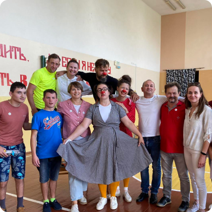
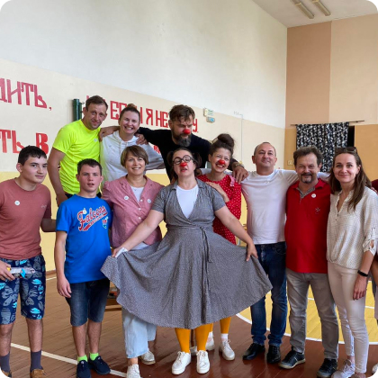
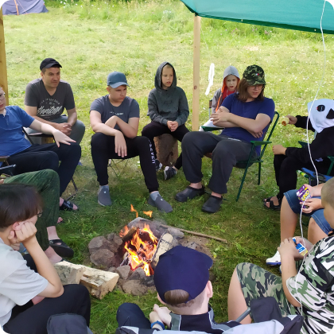
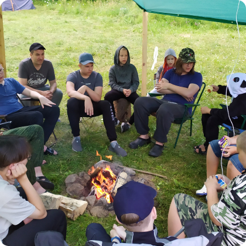

Йога смеха - это уникальная методика, созданная индийским доктором медицинских наук Маданом Катарией.
Участникам предлагается смеяться без причины. Это ряд искусственных механических действий: улыбка, сокращение диафрагмы и вокализация, усиленное дыхание. Однако, такой смех вызывает такие же физиологические процессы в нервной, эндокринной, дыхательной и других системах организма, как и натуральный.
В результате в организме выделяются гормоны счастья: серотонин, эндорфин, дофамин, окситоцин. Вместе они вызывают ощущение комфорта, радости, прилива сил, второго дыхания, которое мы называем счастьем.

 


 
